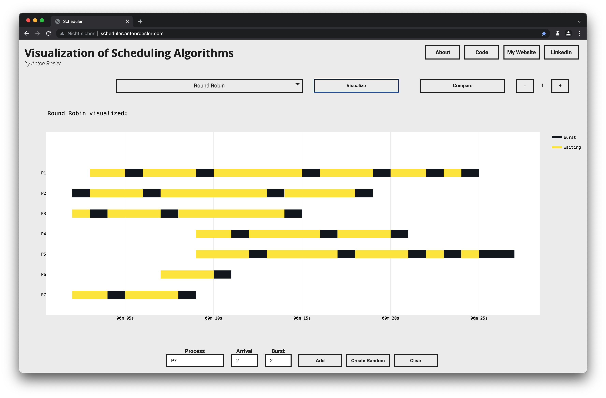

This minimalistic web application was created by me to visualize scheduling algorithms. The user can add processes in the bar at the bottom. A process needs a unique name, an arrival time and a burst time (duration). Random processes can also be created by clicking on ‘Create Random’.
In the upper dropdown menu one of six scheduling algorithms can be selected. The created processes are simulated according to the selected algorithm after a click on ‘Visualize’ and the resulting schedule is visualized.
The ‘Compare’ button can be used to display statistical key figures of each of the algorithms on the current processes. These are respectively the mean and median for the waiting time and turnaround time of each scheduling algorithm on the processes.
The core of the project is implemented with Python. The Django framework was used to make it an interactive web application. Additionally used: plotly, some JavaScript, html and css.